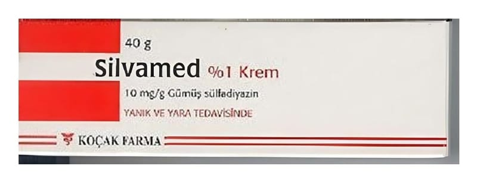

Silvamed % 1 Krem, 40 g

Ne için kullanılır
KT · Bölüm 1• SİLVAMED, etkin maddesi gümüş sülfadiazin olan kremdir. SİLVAMED, beyaz-krem renkli opak, homojen görünüşlü, kokusuz kremdir. Gümüş sülfadiazin, yara veya yanık bölgelerinde iltihaplanmalara (enfeksiyonlara) yol açan bakterileri öldürerek etki gösterir. • SİLVAMED, 40 gr’lık tüplerde ve 400 g’lık kavanozlarda bulunur. SİLVAMED’in 1 gramı 10 mg gümüş sülfadiazin içerir.
• SİLVAMED, yanık ve yaralarda ortaya çıkan iltihaplanmaların (enfeksiyonların) önlenmesinde ve tedavisinde kullanılır. • Bacak ülserleri ve bası yaralarında (yatak yaralarında) ortaya çıkan iltihaplanmaların (enfeksiyonların) kısa süreli tedavisinde yardımcı olarak, • Deri nakli yapılan yerlerde ve geniş ölçülü yıpranmaların sonucu ortaya çıkan iltihaplanmaların (enfeksiyonların) önlenmesinde yardımcı olarak, • Parmağın etli kısmı, tırnak kaybı ve/veya parmak ucunun kısmi kaybının (distal falanksın parsiyel kaybının) olduğu parmak ucu yaralanmalarında koruyucu olarak kullanılır.